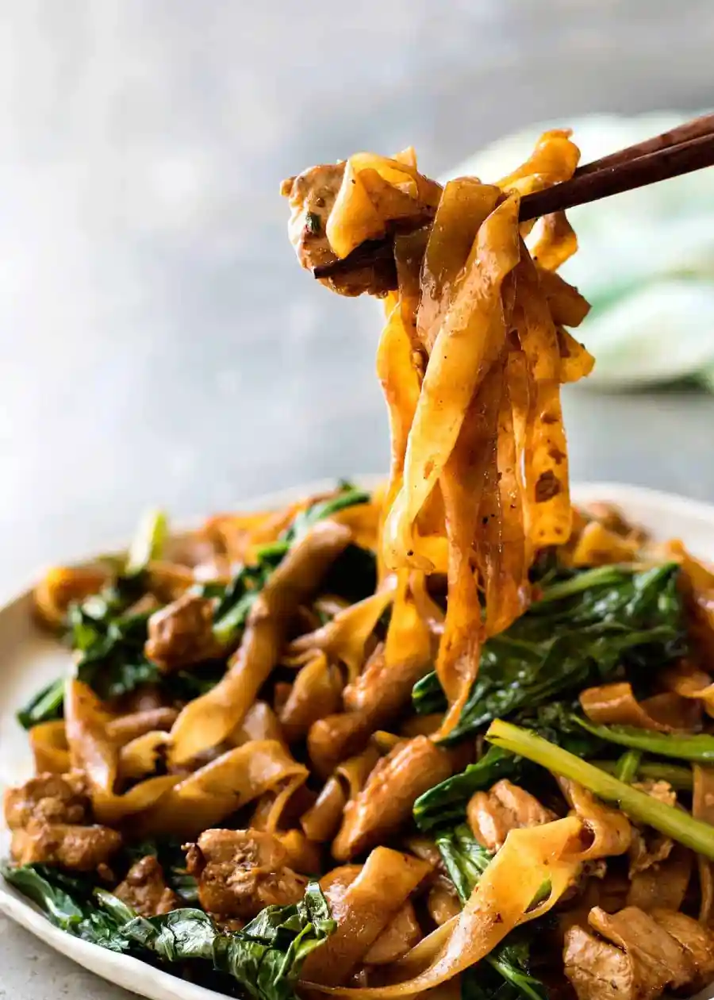

Pad See Ew

Description
Pad See Ew, which means “stir fried soy sauce noodles”, is an extremely popular Thai street food
meal and one of the most popular noodles dishes at Thai restaurants here in Australia.
Ingredients
Sauce Ingredients
- Dark soy sauce: For flavour and staining the noodles a dark brown.
- Ordinary or light soy sauce: For seasoning (salt) and a bit of flavour. Most of the flavour comes from the oyster sauce and dark soy sauce.
- Oyster sauce: Key ingredient, it’s like 10 difference sauces mixed up in one bottle!
- Vinegar: To balance the sweet and savoury. Some form of sour is a key ingredient in South East Asian cooking!
- Sugar: For sweetness
Noodles and Other Ingredients
- Flat noodle: ad See Ew is traditionally made with Sen Yai, which are wide, thin fresh rice noodles that are not easily accessible. Even most Asian stores in Sydney do not sell them – you usually need to go to a Thai grocery store.
- Chinese broccoli/Gai lan: Chinese Broccoli / Gai Lan – This is a key authentic ingredient in Pad See Ew. Otherwise known as Gai Lan or Kai lan, it’s leafy and looks quite different to broccoli, but you’ll notice a similarity in the texture of the stems (hence the name).
- Chicken: Feel free to use other proteins if you wish. But chicken is by far the most popular.
- Egg
Steps
- Garlic, chicken and Chinese broccoli stems first – Using either a wok or large skillet set over high heat, heat the oil then sauté the garlic until it goes light golden. Add the chicken then once it mostly changes from pink to white, add the Chinese broccoli stems which take longer to cook than the leafy part.
- Push everything to the side to make room to scramble the eggs on the side. This is the traditional Thai way of scrambling eggs in Pad See Ew!
- Crack egg straight into the wok.
- Scramble egg – Then mix to scramble it. Speed is of the essence here – we want scrambled egg not a sunny side up egg!
- Empty wok – Remove the chicken and vegetables onto plate. As mentioned above, the best way to cook Pad See Ew at home is to cook the noodles separately so we can get some nice caramelization on them. If we don’t do this, then the noodles just stew instead of caramelizing.
- Add noodles and sauce into the wok.
- Toss quickly for 1 to 1 1/2 minutes until the sauce is dispersed throughout the noodles and you see some caramelization on the edges.